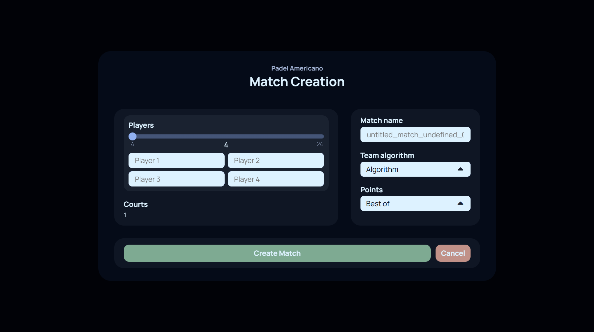
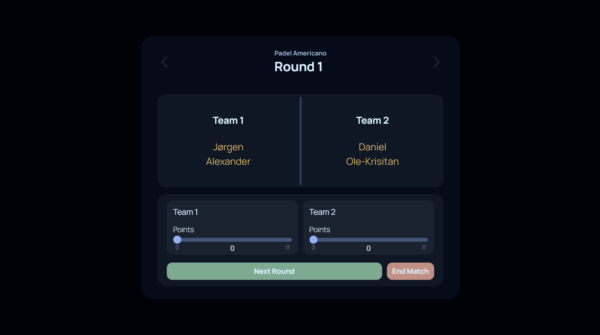
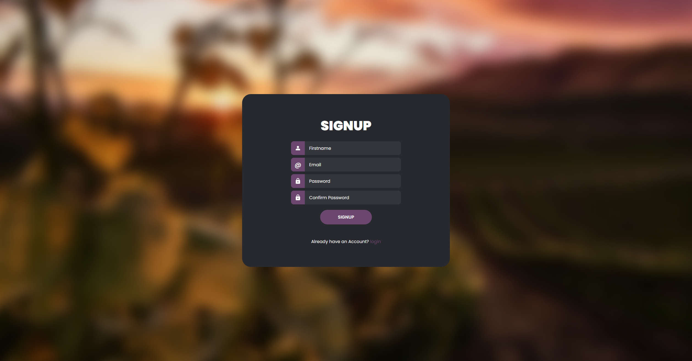

Project Gallery
Under active development



Padel Americano App
This web-app is trying to make it easier for everyone that plays Padel to create fair teams with their friends, and make it easy to host Americano tournements.
I got the idea to create an app like this after my family and I were never satisfied with the other free Padel Americano apps that were out there.
Click here to go to the full project page
Concept and early implementation

Wine App
This private web-app tries to help you with sorting and managing your own wine collection.
The idea for this app comes from my father, and is also getting made for him.
Click here to go to the full project page